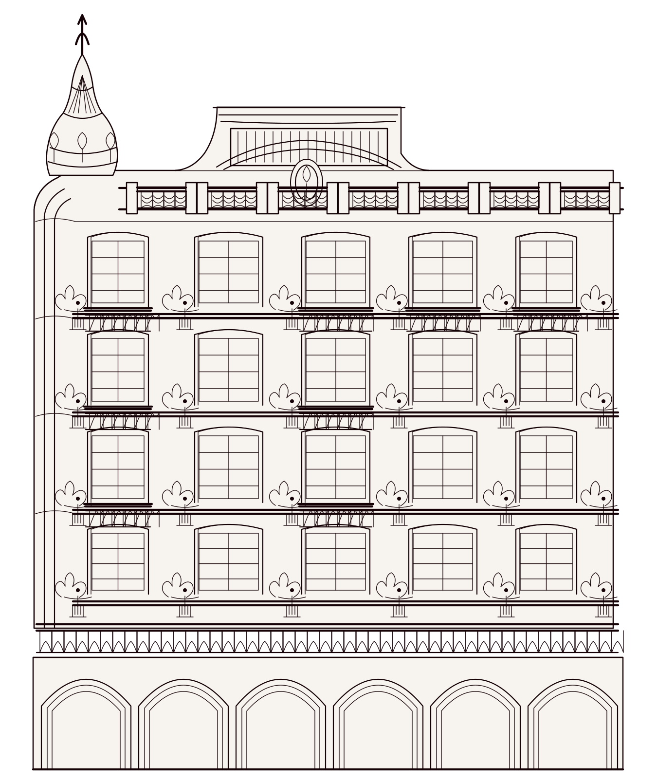
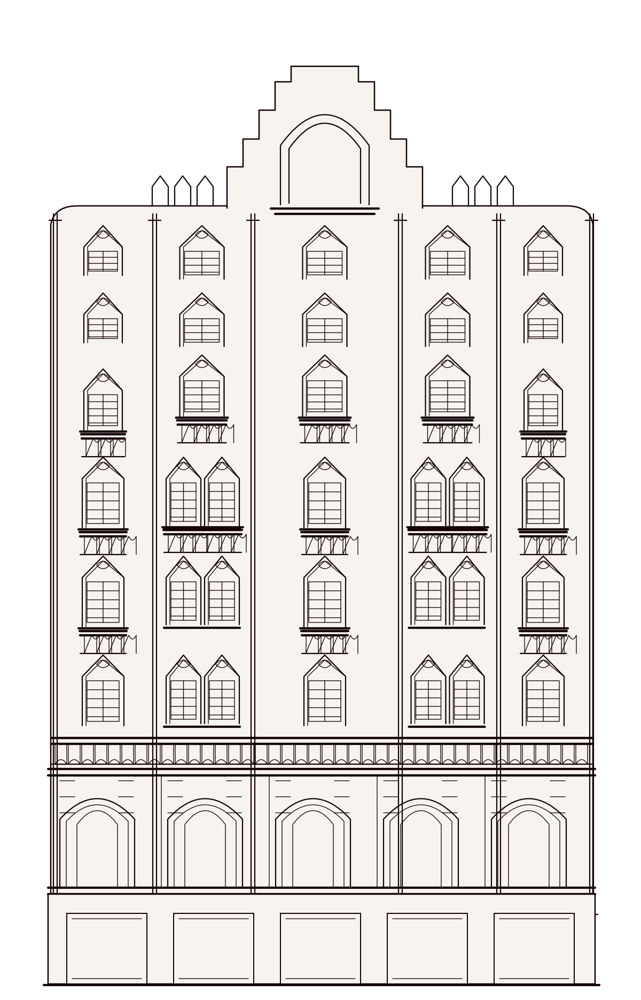
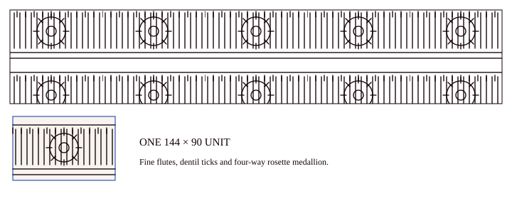
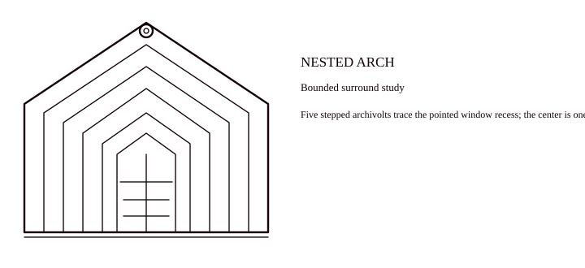

Receive the object.
Bring the original file, its language and its context into one collection.
G3-004 · PRINTGMD collects, organizes and distributes Egyptian cultural data. We connect each work to the people, places and stories around it so culture can move across products, research and public discovery.

Four connected jobs turn scattered material into a record people can find, read and build with.
Bring the original file, its language and its context into one collection.
G3-004 · PRINTDescribe what each object shows and segment its subjects, forms and themes.
SUBJECT · FORM · THEMELink works with people, places, ideas and related material.
ENTITY → SOURCEPrepare records for Film, Kayffa, datasets and useful tools.
PRODUCT · RESEARCH · PUBLICA collection comes to life when a page can be seen as a whole and explored through its images, words and subjects.
Open the full G3-002 spread ↗
One illustrated page can lead to a subject, a visual theme, a language or a related work. Each path returns to the full object.
OBJECT / G3-002Film, Kayffa, Datasets, Encyclopedia, Tools and Games open different ways to explore one connected cultural record.
 Person, work, credit, source →
Person, work, credit, source →Encyclopedia · Tools · Games
More ways to discover cultureTwo supplied illustrated elevations reveal different rhythms of windows, balconies and arcades. The first vector study isolates visible front-facing features. The second tests centered window bays as a design proposal; its original-layout study and photographed page stay linked.
Read architecture source inventory ↗Source-informed elevation studies; full illustrated pages linked



Closeup source KA-001 ↗Closeup source KA-004 ↗